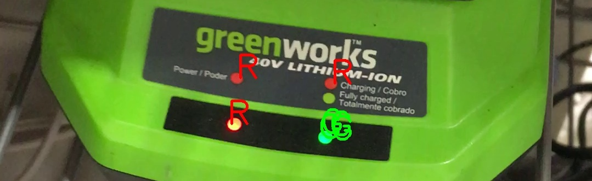

Is that LED Red or Green? ×

Is the battery charged? Is the broadband connection up or down?
If you have red/green color blindness, these questions can sometimes be hard to answer.
This mobile web app analyzes video from your phone's camera and labels regions of bright red, green, or blue color.
Point the camera at a red, green, or blue LED and it should be labeled.
Works best with good lighting.
You may need to get a close-up view and/or try different angles before the color is detected.
Minimal effort is made to avoid labeling things that aren't LEDs.
All of the video analysis and processing is done in javascript, in the web browser, which can drain your battery.
Use the "Stop Camera" button or close the app when you are done to save battery life.
Use the "Start Camera" button to restart video processing if it is stopped.
More info at https://github.com/grwhitehead/isitredorgreen
Copyright 2021 Greg Whitehead